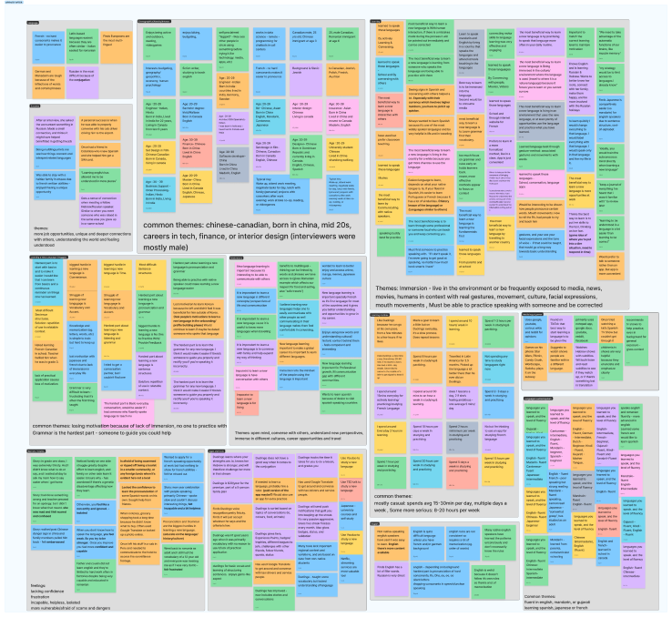

Voluble enables language-learners to interact with real-humans in everyday scenarios in order to practise their speaking skills in a safe, immersive way.
Role
UI/UX Designer
Time Span
2 weeks in Jan. 2022
Member
Adam, Zil, Squid, Mindy
PROCESS OVERVIEW
EMPATHIZE
- User research
- Proto persona
- Online survey
- User interview
- Affinity diagram
- User persona
DEFINE & IDEATE
- User insight
- Problem Statement
- Brainstorm
- Feature Prioritization
PROTOTYPE
- Competitor Analysis
- User flow
- User journey map
- Sketch Low-fi Prototype
- Digital Low-fi Prototype
TEST & ITERATION
- Guerilla Test
- Iteration
- Mid-fi Prototype
- Conclusion
Hypothesis
Despite the help of modern language tools and apps, we suspect many independent learners lack an immersive way to use their conversational skills. As a result they might struggle to keep their confidence and motivation when learning their chosen language.
EMPATHIZE
ONLINE SURVEY
To collect quantitative data, we invited 14 people who are
bilingual and at the age of 20 to 50+, to answer the online
survey.
The survey included 4 parts:
- 4 Basic Info questions
- 4 Language research questions
- 2 Language learning suggestions
- 2 challenge questions
14.3% of people spend 2 hours minimum to learning a new language, and rest of people spend various of time on studying a new language.
71.4% of people think the biggest hurdle in learning a new language is no one to practice with or provide feedback, 14.3% of people think they do not have time to learn a new language, and 14.3% of people think it is not that convenience to learn a new language.
ONE ON ONE INTERVIEW
To collect quantitative data, we invited 4 people who are
bilingual and at the age of 20 to 50+, to answer the interview
which help us to create user persona and defined the problem
statement.
The survey included 4 parts:
- 3 Introduction questions
- 3 Demographics questions
- 8 Research questions
- 1 Conclusion questions
RESEARCH QUESTIONS
- What are your interests?
- Do you work/go to school? What do you do/study?
- What's your age? How do you identify? (open to interpretation)
- Walk me through a typical day in your life
- What are some of the apps and sites do you use the most?
- How comfortable do you feel about modern technology?
- What motivates different users to study new languages?
- What are user patterns and experiences with learning new languages?
- Why do users struggle or succeed to meet their language-learning goals
- Is there anything else you want to share? Any questions for me?>


What they said?
DEFINE & IDEATE
USER PERSONA
Shannon Li is a software developer in Vancouver who enjoys continually pushing herself to learn new skills. Her passions are technology, learning, and understanding other people and cultures. Born and raised in China, she moved to Canada as a post-secondary student. She is fluent in Cantonese and Mandarin and has studied English since elementary school but would like to improve her pronunciation and grammar. She is also potentially interested in learning French to open herself to more opportunities and be challenged with new ways of communicating.

USER INSIGHT
Career-oriented language learners need more confidencein their pronunciation to feel included amongst their peers and achieve better opportunities in their professional lives.
PROBLEM STATEMENT
Non-native english speakers entering the professional world lack confidence in their speaking skills. How might we help them improve their confidence as they strive for better opportunities and connections in their lives?
We brainstormed.. all ideas welcome

We re-organized our ideas by priority and feasibility.

The Solution:
A fun, simulation-style app where users enter real-life
scenarios (with real humans) and respond out loud to the
characters as they progress the scene.
Users will:
- Be immersed in communities with native-level speakers
- Experience language-learning in context with culture, emotional expression, facial movement, and posture
- Receive AI coaching and unique feedback on their pronunciation
Storyboard

PROTOTYPE
User task flow
User flow
 1.png)
Competitor analysis
Our team analyzed the language-learning apps Elsa Speak, Falou, Youdao, and Say It. We discussed their features, strengths, weaknesses, and user reviews to help pinpoint what’s important to users and what they’re missing.

Falou

Elsa Speak

Youdao

Say it
Main Takeaways
- Users seeking help with pronunciation and speaking struggle to find a resource to practice these skills
- Many apps that promised to help with speaking have become over-complicated and confusing
- Other apps consistently perform poorly in voice recognition
- Many tools don’t recognize regional accents and variations of their languages
- Users appreciate visuals, videos, and detailed, specific feedback for their pronunciation
- Users want interaction and feedback from other humans
- Encouragement, rewards, and progress tracking helps users commit and stay motivated
- Users enjoy fun, gamified learning and storytelling
Low-Fi Prototype


Digital Low-Fi Prototype


TEST & ITERATION
User testing
We tested and iterated and tested and iterated. We had users test our onboarding process, scene interaction screens, and view their progress meters. Here are some changes we made to our prototype after feedback:
- pop up to ask you if you want to spend your stars (kinda like enable location pop up, just to make it clearer what’s happening between these screens)
- user don't need to upload a profile pic or create an avatar.
- Add search bar
- Stars and point system was a bit confusing
- Have intro scenes available as a tutorial to get the user’s familiar
- Have coaching screens available at the beginning and in the home screen
- Be able to change the language - Changing the language will reset everything you’ve unlocked
- Have Easy, Medium, Hard options for each scene with different star values
- Categorize scenes based scenario and importance of the interaction (ie, introductions - easy, shopping - medium, interview - hard)
- Have a progress bar of how well you do each phrase - Circle button with a percentage
- Expand on the lifeline button. What does it do?
- Is it strictly American English or UK English
Iteration- Final prototype


Conclusion
Final Thoughts
- Social element, speak with real people, native or peer-evaluation, visual recordings/facial recognition, partner with real communities/people/cultures in various regions of the world, regional filters versions of language
- Monetization
- Uses for travellers, speech therapy, actors, anyone trying to improve pronunciation by region and dialect